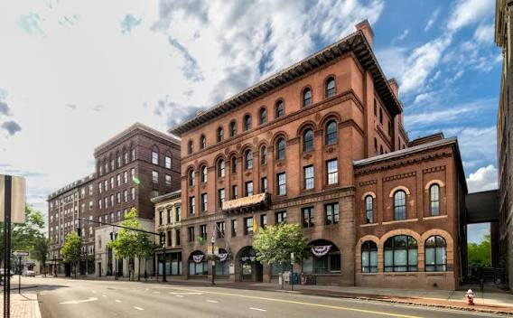
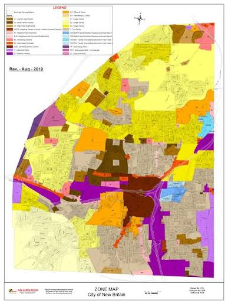

Is New Britain, CT in the United States

New Britain was settled in 1687. It was incorporated as a new parish as the New Britain Society in 1754. New Britain Normal trained teachers in its beginnings and in later years became the Teachers College of Connectcut. It was renamed again to Central Connectiut State College, and lastly renamed to Central Connecticut State Univeristy
